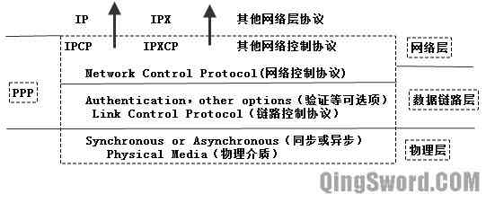
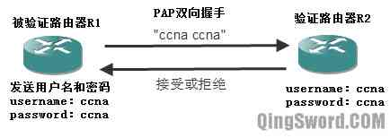
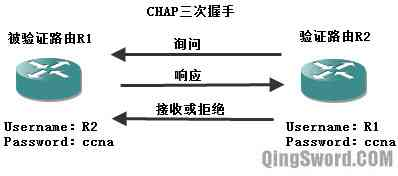
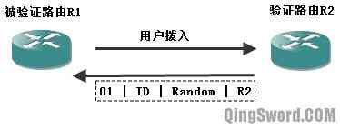
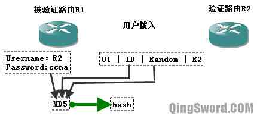
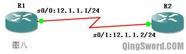

[CCNA图文笔记]-24-PPP协议实例详解
引言
这篇文章介绍PPP（Point-to-Point，点到点协议）的基础知识，实例演示PPP协议在思科路由器上的基本配置，文章的后半部分重点介绍PPP的两种验证方式。
文章目录
- 0×1.PPP概述
- a.HDLC封装协议
- b.同步和异步串行通信
- c.PPP特点
- d.PPP分层体系结构
- e.PPP会话建立过程
- f.PPP身份验证协议
- 0×2.PPP基本配置
- a.配置PPP封装
- b.配置压缩
- c.配置链路质量监控(LQM)
- d.配置链路负载均衡
- 0×3.PPP验证配置
- a.PAP验证
- b.CHAP验证
0×1.PPP概述
a.HDLC封装协议
HDLC是思科路由器串行接口默认的封装协议，由于串行线路在远距离通信中的优势，远距离传输数据一般都使用串行线路，而一些计算机的内部通信一般采用并行通信。标准的HDLC封装只能支持单协议，即IP协议，思科对标准的DHLC进行了改进，增加了协议域字段来支持多种网络层协议。虽然改进后的DHLC是思科私有的，但是现在大多网络设备都能够使用它。
在"GNS3"中启动一台c3640路由器，确保这个路由器添加了串行接口模块，然后通过下面的命令来查看串行接口默认的封装协议：
R1#show interfaces s0/0 /*可以看到下面这一句输出"Encapsulation HDLC"，说明思科路由串口默认使用HDLC封装*/ Encapsulation HDLC, crc 16, loopback not set
思科路由之所以默认使用HDLC封装是因为路由器之间用同步串行接口连接时，Cisco HDLC封装要比PPP封装效率高很多。但是其他网络设备不一定支持思科HDLC，所以在不同厂商设备混用的时候，最好采用PPP作为串口封装协议。
使用下面这条命令将串行接口的封装改成PPP：
R1#conf t /*进入s0/0接口更改封装类型为ppp*/ R1(config)#int s0/0 R1(config-if)#encapsulation ppp R1(config-if)#end /*再次查看接口信息，"Encapsulation PPP"表明，接口封装类型变成了ppp*/ R1#show int s0/0 Encapsulation PPP, LCP Closed, crc 16, loopback not set
b.同步和异步串行通信
串行通信分为同步传输和异步传输，下面分别介绍这两种传输技术。
1）异步传输
通常，异步传输是以字符为传输单位的，每个字符添加一位起始位和一位停止位，用来标记一个字符的开始和结束。这种传输方式每传输一个字符都要附加2-3位，通信效率较低。这种传输方式发送方发出数据后，不等对方发回响应，接着发送下一个数据包。
2）同步传输
通常，同步传输是以数据块为传输单位，每个数据块的头部和尾部附加一个特殊的字符或比特序列，标记一个数据块的开始和结束，一般还附加效验序列，以便对数据块进行差错控制。这种传输方式发送方发出数据后要等待接收方发回响应，然后再发下一个数据包。路由器的串行接口属于快速的同步接口，所以需要在DCE端配置"时钟"来进行信号同步。
在需要配置时钟的接口中执行下面的命令：
R1(config)#int s 0/0 /* * 其中的64000是比特率，可以通过下面这条命令来查看比特率允许的值， * R1(config-if)#clock rate ? */ R1(config-if)#clock rate 64000 R1(config-if)#end
c.PPP特点
PPP是IETF（因特网工程任务组）推出的点到点类型线路的数据链路层封装协议，PPP支持下面几类物理接口：
同步串行接口
异步串行接口
高速串行接口（HSSI）
综合业务数字网（ISDN）
此外PPP还被广泛的应用在ATM上（PPP over ATM，简称PPPoA）以及以太网上（PPP over Ethernet，简称PPPoE）。
PPP利用下面三个组件来解决网际网络连接问题：
在点对点链路上使用高级数据链路控制（HDLC）封装数据。PPP帧格式以HDLC帧格式为基础，做了少许改动。
使用LCP（Link Control Protocol，链路控制协议）来建立、设定和测试数据链路连接。
使用NCPs（Network Control Protocols，网络控制协议系列）建立和设定不同的网络层协议。
d.PPP分层体系结构
PPP分层体系架构是一个逻辑模型，下图是这一构架和OSI参考模型的对比：
只要是点到点类型的线路都可以运行PPP，在数据链路层PPP通过LCP协议进行链路管理，相当于以太网数据链路层的MAC子层，在网络层NCP为不同协议提供服务，相当于以太网数据链路层的LLC子层。
下面是PPP的LCP子层和NCP子层的简单介绍：
1）LCP（Link Control Protocol）子层
LCP子层位于物理层之上，除了用来建立、配置和测试数据链路连接外，还提供下面这些功能；
身份验证：提供了PAP和CHAP验证。
压缩：将需要传输的数据先压缩再传输。支持Stac、Predictor、MPPC以及TCP头部压缩。
错误检测：保证链路的质量。
多链路：实现链路的负载均衡。
PPP回拨：可以提高安全性和节约用户拨号费用。
2）NCP（Network Control Protocol）子层
当LCP将链路建立好后，PPP开始根据不同用户的需要配置上层协议所需环境，NCP被用来为上层服务提供服务接口，针对不同的上层协议NCP提供不同的服务组件。
e.PPP会话建立过程
PPP从开始发起呼叫到最终通信完成后释放链路一共要经历下面四个步骤：
第一步：链路的建立和配置协商，主要由LCP完成，通信的发起方发送LCP帧来配置和检测数据链路。
第二步：链路质量检测(可选)，属于LCP的可选功能，主要是测试链路的质量能否满足要求。
第三步：网络层协议的配置阶段,主要是NCP的功能，通信双方交换一系列NCP分组来配置网络层，NCP配置好后双方的逻辑通信链路就建立完成了。
第四步：链路终止，当数据传送完成，或者一些外部事件发生的时候，一方会发起断开连接的请求，这时，首先使用NCP来释放网络层的链接，然后使用LCP来关闭数据链路层的链接，最后双方的通信设备关闭物理链路。
f.PPP身份验证协议
PPP有两种可选的身份验证协议PAP和CHAP。
1）PAP（Password Authentication Protocol，密码验证协议）
这是一种两次握手协议，采用明文传输方式传输用户口令，验证步骤如下：
首先被验证方主动发起验证请求，将本地配置的用户名和密码用明文的方式发送给验证方，验证方接收到验证请求后检查此用户名和密码是否正确（在验证方的数据库中也配置有此用户名和密码），正确就发回接受报文，错误就发送拒绝报文；这种验证方式是采用明文传输，很容易被破解。
2;）CHAP（Challenge Handshake Authentication Protocol，挑战握手验证协议）
这是一种三次握手协议，它只在网络上传输用户名，密码并不在网络上传输，下图为CHAP验证示意图：
CHAP的验证过程如下：
在PPP链路建立阶段完成后（R1作为被验证方拨入），验证方R2主动发起验证挑战"Challenge"，挑战报文中"01"是序列号；R2上可能有多个拨入请求，"ID"用来识别是哪个拨入者发起的挑战；"Random"是一个随机数；"R2"是发起挑战路由器的名字。
被验证方收到验证方发来的请求后，根据这个报文中的路由器名称（R2），在本地数据库中寻找到这个名称（R2）对应的密码，如果找到对应的密码，则用验证方发送过来的报文的ID和随机数加上本地数据库中找到的密码，以MD5算法生成一个"hash"值。
生成hash之后，再将这个hash值、验证方R2发送过来的ID号以及本路由的名称R1，发回给验证方R2。其中报文的序列号是"02"，"ID"是R2发送过来的ID不变，"hash"是R1计算后得到的哈希值。
R2接收到这个报文后，利用报文中的ID值找到储存在本地数据库中的随机数，并且根据发送过来的报文中路由器的名称(R1)找到本地数据库对应这个名称的密码，然后利用ID、随机数、R1对应的密码使用MD5算法生成一个hash值，最后用这个hash值与R1发送过来的hash比较，相同则验证通过，发回序号是"03"的确认报文，如果不相同则验证失败，发回序号是"04"的验证失败报文。
从这个步骤可以看出，只要双方配置相同的验证密码，即可完成验证，并且这个密码是不会在链路上传输的，传输的只是一个随机数、一个ID值、路由器的名称和发回的hash值。
0×2.PPP基本配置
a.配置PPP封装
在GNS3中配置下面这个简单拓扑：
_<这张是图8">R1和R2配置：
/*配置R1串口IP*/ R1(config)#int s 0/0 R1(config-if)#ip add 12.1.1.1 255.255.255.0 R1(config-if)#no shut R1(config-if)#end /*配置R2串口IP*/ R2(config)#int s 0/1 R2(config-if)#ip add 12.1.1.2 255.255.255.0 R2(config-if)#no shut R2(config-if)#end /*在R1上查看接口默认封装协议*/ R1#show interfaces s 0/0 Serial0/0 is up, line protocol is up /*默认的串口封装协议是HDLC*/ Encapsulation HDLC, crc 16, loopback not set /*此时R1和R2双方互相能够Ping通*/ R1#ping 12.1.1.2 !!!!! /*将R1的串口封装改成PPP*/ R1(config)#int s 0/0 R1(config-if)#encapsulation ppp R1(config-if)#end /* * 如果R2的串口没有改成PPP，会出现端口down掉的提示，查看R1接口, * 发现S0/0接口的协议是down的。 */ R1#show ip interface brief Interface IP-Address OK? Method Status Protocol Serial0/0 12.1.1.1 YES manual up down R1# /*再查看R1的s0/0接口详细信息*/ R1#show interfaces s 0/0 Serial0/0 is up, line protocol is down Encapsulation PPP, LCP Listen, crc 16, loopback not set /*可以看到封装虽然已经改成了PPP，但是LCP还处于监听状态*/ /*此时R1是ping不通R2的，下面将R2也改成PPP封装*/ R2(config)#int s 0/1 R2(config-if)#encapsulation ppp R2(config-if)#end /*再次查看R1的s0/0接口详细信息*/ R1#show interfaces s 0/0 Serial0/0 is up, line protocol is up Encapsulation PPP, LCP Open Open：IPCP, CDPCP, crc 16, loopback not set /* * LCP Open 表示链路协商成功， * Open：IPCP表示NCP也建立成功了。 */
b.配置压缩
配置压缩会影响路由性能增加CPU负荷，如果需要传送的文件已经压缩过，比如ZIP，RAR等，则不建议在路由上开启压缩：
/*在路由串行接口上启用压缩功能*/ R1(config)#int s 0/0 R1(config-if)#compress ? /*查看可用的压缩类型*/ lzs lzs compression type mppc MPPC compression type predictor predictor compression type stac stac compression algorithm <cr> R1(config-if)#compress lzs /*启用lzs压缩*/ R1(config-if)#end
c.配置链路质量监控(LQM)
在本文前面的"PPP会话建立过程"的第二步中提到了一个可选的阶段"链路质量检测"，在这个阶段LCP测试链路并决定链路的质量能否满足第三层协议的需要，如果不能满足，链路将会关闭。可以使用下面的命令来配置质量监控：
/*计算数据包发送的成功率，链路有效要大于80%，否则认为链路无效*/ R1(config)#int s 0/0 R1(config-if)#ppp quality 80 R1(config-if)#end
d.配置链路负载均衡
PPP链路负载均衡（多链路PPP，也叫MP、MPPP、MLP或Multilink）允许包被分段，在到对方的多条点对点线路上被同时发送，配置命令如下：
R1(config)#int s 0/0 R1(config-if)#ppp multilink R1(config-if)#end
0×3.PPP验证配置
PPP验证部分使用上面的图八作为拓扑图在GNS3中配置。
a.PAP验证
R1配置：
/*配置用户名和密码，这个用户名和密码要和R2发送过来的一致*/ R1(config)#username ccna_R2 password ccna_R2_pass R1(config)#int s 0/0 R1(config-if)#ip add 12.1.1.1 255.255.255.0 R1(config-if)#no shut R1(config-if)#encapsulation ppp /*使用PPP封装*/ R1(config-if)#ppp authentication pap /*使用PAP验证*/ /*R1发给R2的用户名和密码，R2上需要配置和R1发送过去的这个用户名和密码一致*/ R1(config-if)#ppp pap sent-username ccna_R1 password ccna_R1_pass R1(config-if)#end
R2配置：
/*在R2上配置用户名和密码，要和R1发送过来的一致*/ R2(config)#username ccna_R1 password ccna_R1_pass R2(config)#int s 0/1 R2(config-if)#ip add 12.1.1.2 255.255.255.0 R2(config-if)#no shut R2(config-if)#encapsulation ppp R2(config-if)#ppp authentication pap /*向R1发送用户名和密码*/ R2(config-if)#ppp pap sent-username ccna_R2 password ccna_R2_pass R2(config-if)#end
配置完成后检测R1和R2连通性，发现可以正常通信，PAP并不是路由器推荐的验证方式。
b.CHAP验证
使用CHAP验证配置本文图八中的拓扑：
R1配置：
/* * 配置本地验证的用户名和密码， * 用户名必须是对端路由器的名称， * 密码验证双方要相同， * 在本文"PPP身份验证协议"中已经讲解过原理。 */ R1(config)#username R2 password www.qingsword.com R1(config)#int s 0/0 R1(config-if)#ip add 12.1.1.1 255.255.255.0 R1(config-if)#no shut R1(config-if)#encapsulation ppp R1(config-if)#ppp authentication chap /*使用CHAP验证*/ R1(config-if)#end
R2配置:
/*用户名是R1的名称，密码和R1相同*/ R2(config)#username R1 password www.qingsword.com R2(config)#int s 0/1 R2(config-if)#ip add 12.1.1.2 255.255.255.0 R2(config-if)#no shut R2(config-if)#encapsulation ppp R2(config-if)#ppp authentication chap R2(config-if)#end
配置完成后测试双方可以通信。
除此之外，可以使用下面的命令来查看PPP验证过程：
/*调试ppp验证*/ R1#debug ppp authentication PPP authentication debugging is on R1#conf t R1(config)#int s 0/0 R1(config-if)#shut /*关闭s0/0，然后再打开*/ R1(config-if)#no shut *Mar 1 01:18:25.627: Se0/0 PPP: Session handle[7300007B] Session id[127] *Mar 1 01:18:25.631: Se0/0 PPP: Authorization required /*这里省略部分输出，可以看到很多类似输出*/